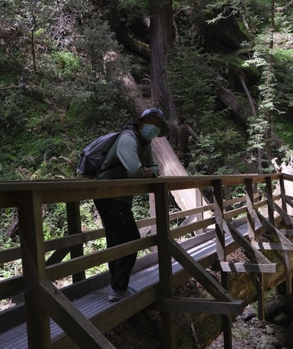

|  | Haoyu YangLead Software Engineer |
About
I'm currently a Lead Software Engineer at Cadence Design Systems Inc,
where I actively conduct research and development on Innovus product.
Prior that, I was a postdoctoral fellow in the Department of Computer Science and Engineering, the Chinese University of Hong Kong.
My research interests
include (1) Machine Learning in VLSI Design for Manufacturability
(2) High Performance VLSI Physical Design with Parallel Computing
and (3) Machine Learning Security.
[My Resume]
Paper Review/External Review
Elsevier Signal Processing
International Journal of Machine Learning and Cybernetics (JMLC)
IEEE Transactions on Computer-Aided Design of Integrated Circuits and Systems (TCAD)
ACM Transactions on Design Automation of Electronic Systems (TODAES)
ACM Great Lakes Symposium on VLSI (GLSVLSI)
IEEE Transactions on Sustainable Computing (TSUSC)
IET Cyber-Physical Systems: Theory & Applications
IEEE ACCESS
ACM/IEEE Design Automation Conference (DAC)
News
09-06-2020: I have passed thesis oral defense
07-06-2019: Three papers are presented at the 56th Design Automation Conference, Las Vegas, NV
28-02-2019: I am awarded the 2019 Nick Cobb Memorial Scholarship by SPIE and Mentor Graphics (SPIE-News) (CUHK-News)
22-01-2019: I received the best poster award in Student Research Forum in ASPDAC 2019 (Photos)
08-07-2018: Start summer intern at Cadence Design Systems Inc, San Jose, CA
28-06-2018: Our paper was presented in the 55th Design Automation Conference, San Francisco, CA
04-09-2017: Start intern at ASML Brion, San Jose, CA
21-06-2017: One paper was presented in the 54th Design Automation Conference, Austin, TX
01-03-2017: One paper was presented in the SPIE Advanced Lithography Conference, San Jose, CA